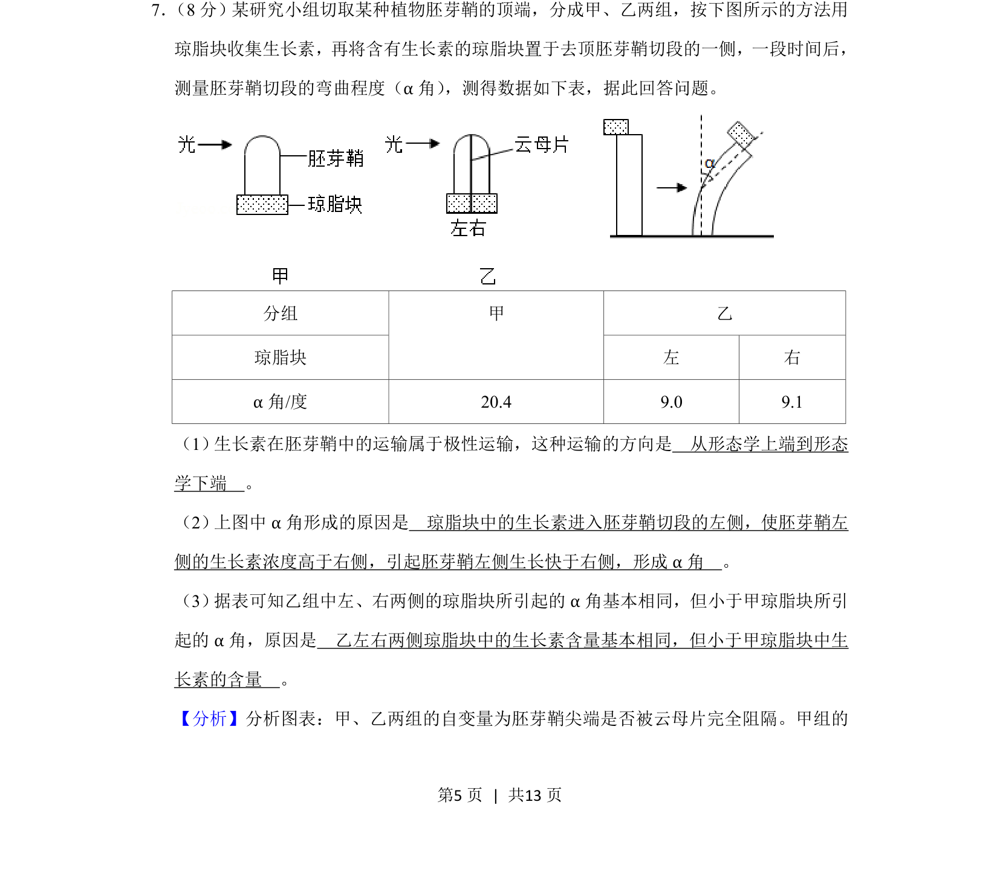
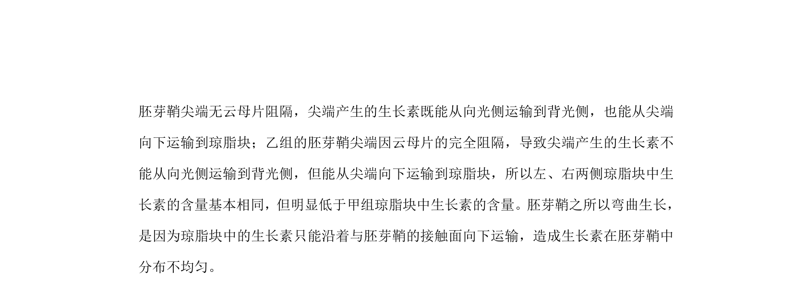
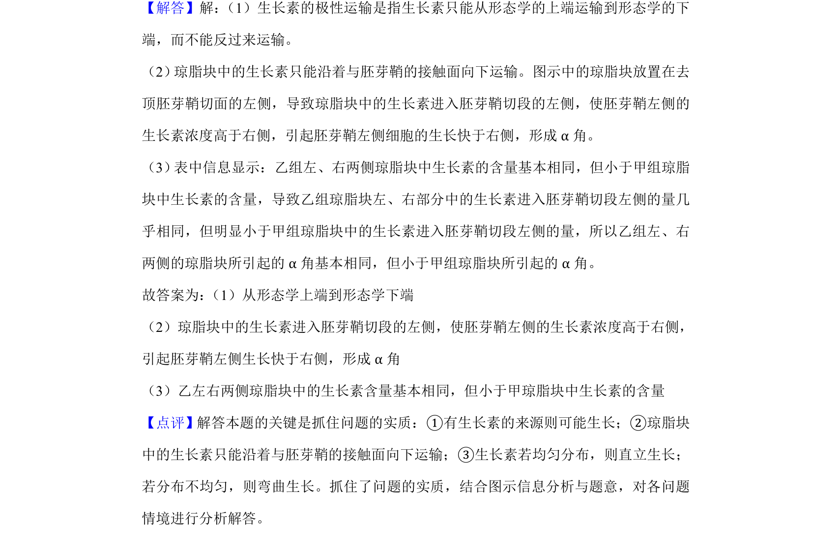

考点：生长素 极性运输 琼脂块法 胚芽鞘向光性


考查生长素极性运输和琼脂块收集法的实验分析，涉及α角成因及云母片影响。

📄 原 PDF 第 5 页：
素材/真题/吉林/2008-2024·（吉林）生物高考真题/2019年高考生物试卷（新课标Ⅱ）（解析卷）.pdf
7． （8分）某研究小组切取某种植物胚芽鞘的顶端，分成甲、乙两组，按下图所示的方法用 琼脂块收集生长素，再将含有生长素的琼脂块置于去顶胚芽鞘切段的一侧，一段时间后， 测量胚芽鞘切段的弯曲程度（α角） ，测得数据如下表，据此回答问题。 分组 乙 琼脂块 甲 左 右 α角/度 20.4 9.0 9.1 （1） 生长素在胚芽鞘中的运输属于极性运输，这种运输的方向是 从形态学上端到形态 学下端 。 （2） 上图中α角形成的原因是 琼脂块中的生长素进入胚芽鞘切段的左侧，使胚芽鞘左 侧的生长素浓度高于右侧，引起胚芽鞘左侧生长快于右侧，形成α角 。 （3） 据表可知乙组中左、右两侧的琼脂块所引起的α角基本相同，但小于甲琼脂块所引 起的α角，原因是 乙左右两侧琼脂块中的生长素含量基本相同，但小于甲琼脂块中生 长素的含量 。
【分析】分析图表：甲、乙两组的自变量为胚芽鞘尖端是否被云母片完全阻隔。甲组的